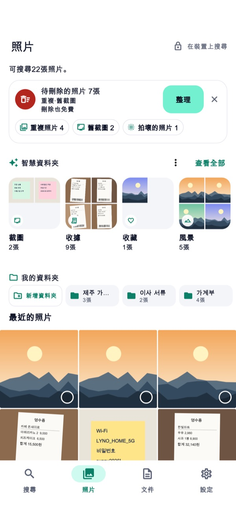
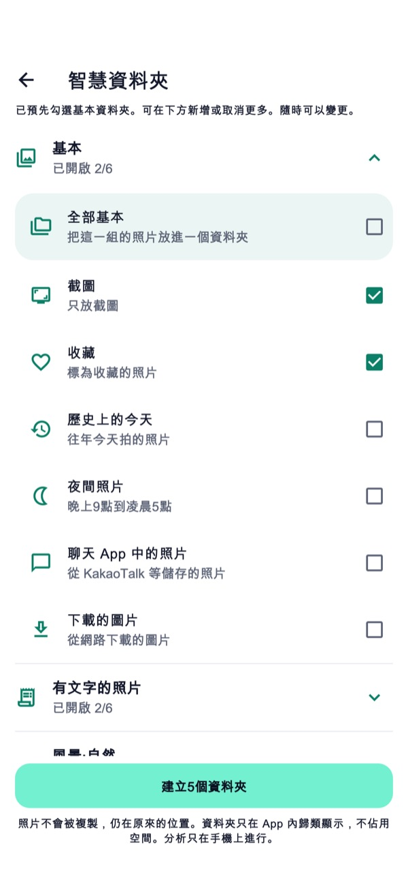

智慧資料夾使用方法
1. 什麼是智慧資料夾?
LYNO Find 會自動把照片分類放進資料夾。新拍的照片也會自動進入合適的資料夾。

2. 有哪些資料夾?
預設開啟:截圖, 自拍, 收藏, 依地點, 旅行, 收據, 筆記·手寫, 美食, 寵物
可選開啟:基本、地點·旅行、有文字的照片、人物·動物、活動、嗜好·運動、物品·美食、風景·自然8 個分組,共 38 個資料夾
3. 怎麼使用?
1. 點下方的照片分頁。
2. 在智慧資料夾點「查看全部」即可打開資料夾。
3. 在「選擇資料夾」中展開分組,開啟或關閉想要的資料夾。
4. 開啟分組最上面一行(如「全部嗜好·運動」),整個分組的照片會放進一個資料夾。

4. 請放心
不會複製或移動照片。原圖保持不變,資料夾只是把照片集中顯示。所有分類都在手機上完成。